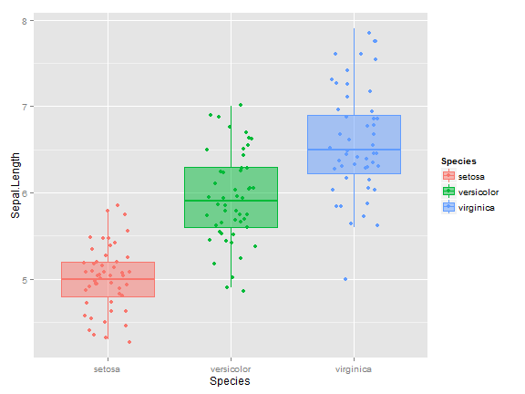
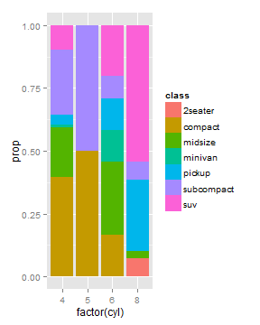

Darren L Dahly


library(ggplot2)
head(iris)
## Sepal.Length Sepal.Width Petal.Length Petal.Width Species
## 1 5.1 3.5 1.4 0.2 setosa
## 2 4.9 3.0 1.4 0.2 setosa
## 3 4.7 3.2 1.3 0.2 setosa
## 4 4.6 3.1 1.5 0.2 setosa
## 5 5.0 3.6 1.4 0.2 setosa
## 6 5.4 3.9 1.7 0.4 setosa
lapply(iris, class)
## $Sepal.Length
## [1] "numeric"
##
## $Sepal.Width
## [1] "numeric"
##
## $Petal.Length
## [1] "numeric"
##
## $Petal.Width
## [1] "numeric"
##
## $Species
## [1] "factor"
ggplot(iris, aes(x = Sepal.Width)) +
geom_bar()

plot <- ggplot(iris, aes(x = Sepal.Width))
plot <- plot + geom_bar()
plot

ggplot(iris[1:10, ], aes(x = Sepal.Width)) +
geom_bar()

ggplot(subset(iris, Species == "setosa"), aes(x = Sepal.Width)) +
geom_bar()

library(dplyr)
iris %>%
filter(Species == "virginica") %>%
ggplot(aes(x = Sepal.Width)) +
geom_bar()

iris %>%
mutate(Sepal.Width = factor(round(Sepal.Width, 0))) %>%
ggplot(aes(x = Sepal.Width)) +
geom_bar()

iris %>%
mutate(Sepal.Width = round(Sepal.Width, 0)) %>%
ggplot(aes(x = Sepal.Width)) +
geom_bar()

ggplot(iris, aes(x = Sepal.Width, y = Sepal.Length)) +
geom_point()

ggplot(iris, aes(x = Sepal.Width, y = Sepal.Length, color = Species)) +
geom_point()

ggplot(iris, aes(x = Sepal.Width, y = Sepal.Length, size = Species)) +
geom_point()

ggplot(iris, aes(x = Sepal.Width, y = Sepal.Length, shape = Species)) +
geom_point()

ggplot(iris, aes(x = Sepal.Width, y = Sepal.Length,
shape = Species, color = Sepal.Length, size = Sepal.Width)) +
geom_point()

ggplot(mpg, aes(x = cty, y = hwy, shape = drv, color = class, size = cyl)) +
geom_point()
ggplot(mpg, aes(x = cty, y = hwy, shape = drv, color = class)) +
geom_point() +
facet_wrap(~cyl)

ggplot(mpg, aes(x = cty, y = hwy, color = cyl)) +
geom_point()
ggplot(mpg, aes(x = cty, y = hwy, color = cyl)) +
geom_point(color = "red")

ggplot(mpg, aes(x = cty, y = hwy)) +
geom_point(aes(color = cyl))

ggplot(mpg, aes(x = cty, y = hwy, color = cyl)) +
geom_point() +
geom_point(data = mpg[1:10, ], color = "red")

ggplot(iris, aes(x = Sepal.Width, y = Sepal.Length)) +
geom_point()

ggplot(iris, aes(x = Sepal.Width, y = Sepal.Length)) +
geom_jitter()

ggplot(iris, aes(x = Sepal.Width, y = Sepal.Length)) +
geom_jitter(size = 3.5, alpha = 0.5)

ggplot(iris, aes(x = Sepal.Width, y = Sepal.Length, color = Species)) +
geom_jitter(size = 3.5, alpha = 0.5)

ggplot(iris, aes(x = Sepal.Width, y = Sepal.Length, color = Species)) +
geom_jitter(size = 3.5, alpha = 0.5) +
geom_smooth(method = "lm", se = FALSE)

ggplot(iris, aes(x = Sepal.Width, y = Sepal.Length, color = Species)) +
geom_jitter(size = 3.5, alpha = 0.5) +
geom_smooth(method = "lm", se = FALSE, color = "black")
ggplot(iris, aes(x = Sepal.Width, y = Sepal.Length, color = Species)) +
geom_jitter(size = 3.5, alpha = 0.5) +
geom_smooth(method = "lm", se = FALSE) +
geom_smooth(method = "lm", se = FALSE, color = "black")

ggplot(mpg, aes(x = drv, y = class)) +
geom_jitter(alpha = 0.5, position = position_jitter(width = 0.2,
height = 0.2))

ggplot(mpg, aes(x = drv, y = class, color = year)) +
geom_jitter(position = position_jitter(width = 0.2, height = 0.2))

ggplot(mpg, aes(x = drv, y = class, color = factor(year))) +
geom_jitter(position = position_jitter(width = 0.2, height = 0.2))
ggplot(iris, aes(x = Species, y = Sepal.Length)) +
geom_boxplot()
ggplot(iris, aes(x = Species, y = Sepal.Length)) +
geom_jitter() +
geom_boxplot()

ggplot(iris, aes(x = Species, y = Sepal.Length)) +
geom_jitter(position = position_jitter(width = 0.2, height = 0.1)) +
geom_boxplot(alpha = 0.5)

ggplot(iris, aes(x = Species, y = Sepal.Length, color = Species)) +
geom_jitter(position = position_jitter(width = 0.2, height = 0.1),
outlier.shape = NA) +
geom_boxplot(alpha = 0.5)
ggplot(iris, aes(x = Species, y = Sepal.Length, color = Species,
fill = Species)) +
geom_jitter(position = position_jitter(width = 0.2, height = 0.1)) +
geom_boxplot(alpha = 0.5, outlier.shape = NA)

ggplot(iris, aes(x = Species, y = Sepal.Length, color = Species,
fill = Species)) +
geom_violin(alpha = 0.5)

ggplot(economics, aes(x = date, y = pop)) +
geom_line()

ggplot(Orange, aes(x = age, y = circumference)) +
geom_line()

ggplot(Orange, aes(x = age, y = circumference, group = Tree)) +
geom_line()

ggplot(Orange, aes(x = age, y = circumference, group = Tree, color = Tree)) +
geom_line()
ggplot(Orange, aes(x = age, y = circumference, group = Tree,
linetype = Tree, color = Tree)) +
geom_line()
ggplot(Orange, aes(x = age, y = circumference, group = Tree,
linetype = Tree, color = Tree)) +
geom_point() +
geom_smooth(method = "lm", se = FALSE)

ggplot(Orange, aes(x = age, y = circumference, group = Tree,
linetype = Tree, color = Tree)) +
geom_point() +
geom_smooth(se = FALSE)

ggplot(mpg, aes(x = factor(cyl))) +
geom_bar()
ggplot(mpg, aes(x = factor(cyl))) +
geom_bar() +
coord_flip()

mpg %>%
group_by(cyl) %>%
summarize(total = n()) %>%
mutate(cyl = factor(cyl)) %>%
mutate(cyl = reorder(cyl, total, max))
## Source: local data frame [4 x 2]
##
## cyl total
## 1 4 81
## 2 5 4
## 3 6 79
## 4 8 70
mpg %>%
group_by(cyl) %>%
summarize(total = n()) %>%
mutate(cyl = factor(cyl)) %>%
mutate(cyl = reorder(cyl, total, max)) %>%
ggplot(aes(x = cyl, y = total)) +
geom_bar(stat = "identity") +
coord_flip()

ggplot(mpg, aes(x = interaction(factor(cyl), class))) +
geom_bar() +
coord_flip()

ggplot(mpg, aes(x = factor(cyl), fill = class)) +
geom_bar()
ggplot(mpg, aes(x = factor(cyl), fill = class)) +
geom_bar(position = "dodge")

mpg %>%
group_by(cyl, class) %>%
summarize(subtotal = n()) %>%
mutate(total = max(cumsum(subtotal))) %>%
mutate(prop = subtotal/total) %>%
head()
## Source: local data frame [6 x 5]
## Groups: cyl
##
## cyl class subtotal total prop
## 1 4 compact 32 81 0.39506173
## 2 4 midsize 16 81 0.19753086
## 3 4 minivan 1 81 0.01234568
## 4 4 pickup 3 81 0.03703704
## 5 4 subcompact 21 81 0.25925926
## 6 4 suv 8 81 0.09876543
mpg %>%
group_by(cyl, class) %>%
summarize(subtotal = n()) %>%
mutate(total = max(cumsum(subtotal))) %>%
mutate(prop = subtotal/total) %>%
ggplot(aes(x = factor(cyl), fill = class, y = prop)) +
geom_bar(position = "stack", stat = "identity")

ggplot(mpg, aes(x = factor(cyl), y = cty)) +
geom_bar(stat = "identity")

mpg %>%
group_by(cyl) %>%
summarize(meancty = mean(cty))
## Source: local data frame [4 x 2]
##
## cyl meancty
## 1 4 21.01235
## 2 5 20.50000
## 3 6 16.21519
## 4 8 12.57143
mpg %>%
group_by(cyl) %>%
summarize(meancty = mean(cty)) %>%
ggplot(aes(x = factor(cyl), y = meancty)) +
geom_bar(stat = "identity")
data_frame("ID" = c(1:50),
"A" = sample(c(1:5), 50, replace = T),
"B" = sample(c(1:5), 50, replace = T),
"C" = sample(c(1:5), 50, replace = T),
"D" = sample(c(1:5), 50, replace = T),
"E" = sample(c(1:5), 50, replace = T),
"G" = sample(c(1:5), 50, replace = T)) %>% head()
## Source: local data frame [6 x 7]
##
## ID A B C D E G
## 1 1 3 2 1 1 3 4
## 2 2 5 4 1 4 2 3
## 3 3 5 3 3 3 2 3
## 4 4 2 4 3 1 1 2
## 5 5 4 4 1 5 1 5
## 6 6 4 1 3 1 2 3
library(tidyr)
data_frame("ID" = c(1:50),
"A" = sample(c(1:5), 50, replace = T),
"B" = sample(c(1:5), 50, replace = T),
"C" = sample(c(1:5), 50, replace = T),
"D" = sample(c(1:5), 50, replace = T),
"E" = sample(c(1:5), 50, replace = T),
"G" = sample(c(1:5), 50, replace = T)) %>%
gather(question, value, A:G) %>%
head()
## Source: local data frame [6 x 3]
##
## ID question value
## 1 1 A 1
## 2 2 A 1
## 3 3 A 1
## 4 4 A 5
## 5 5 A 3
## 6 6 A 4
data_frame("ID" = c(1:50),
"A" = sample(c(1:5), 50, replace = T),
"B" = sample(c(1:5), 50, replace = T),
"C" = sample(c(1:5), 50, replace = T),
"D" = sample(c(1:5), 50, replace = T),
"E" = sample(c(1:5), 50, replace = T),
"G" = sample(c(1:5), 50, replace = T)) %>%
gather(question, value, A:G) %>%
mutate(value = factor(value,
labels = c("Weekly",
"Monthly/Quarterly",
"Yearly",
"Not yet",
"Not my job"))) %>%
head()
## Source: local data frame [6 x 3]
##
## ID question value
## 1 1 A Yearly
## 2 2 A Not my job
## 3 3 A Yearly
## 4 4 A Monthly/Quarterly
## 5 5 A Yearly
## 6 6 A Not my job
library(RColorBrewer)
ggplot(mpg, aes(x = factor(cyl), fill = class)) +
geom_bar() +
scale_fill_brewer(palette = "Set1")
library(RColorBrewer)
ggplot(mpg, aes(x = factor(cyl), fill = class)) +
geom_bar() +
scale_fill_brewer(palette = "Blues")
ggplot(iris, aes(x = Sepal.Width, y = Sepal.Length, color = Species)) +
geom_point() +
scale_color_brewer(palette = "Set1")
ggplot(iris, aes(x = Sepal.Width, y = Sepal.Length, color = Species)) +
geom_point() +
scale_color_brewer(palette = "Reds")
brewer.pal(6, "Reds")
## [1] "#FEE5D9" "#FCBBA1" "#FC9272" "#FB6A4A" "#DE2D26" "#A50F15"
brewer.pal(6, "Reds")[4:6]
## [1] "#FB6A4A" "#DE2D26" "#A50F15"
ggplot(iris, aes(x = Sepal.Width, y = Sepal.Length, color = Species)) +
geom_point() +
scale_color_manual(values = brewer.pal(6, "Reds")[4:6])
ggplot(iris, aes(x = Sepal.Width, y = Sepal.Length, color = Species)) +
geom_point() +
scale_color_manual(guide = FALSE, values = brewer.pal(6, "Reds")[4:6])
ggplot(iris, aes(x = Sepal.Width, y = Sepal.Length, color = Species)) +
geom_point() +
scale_x_continuous(breaks = c(2, 3, 4, 5))
ggplot(iris, aes(x = Sepal.Width, y = Sepal.Length, color = Species)) +
geom_point() +
scale_x_continuous(limit = c(3, 4))
ggplot(iris, aes(x = Sepal.Width, y = Sepal.Length, color = Species)) +
geom_point() +
scale_x_reverse()
ggplot(mpg, aes(x = factor(cyl), fill = class)) +
geom_bar() +
scale_x_discrete(limits = c("4", "6", "8"))

ggplot(mpg, aes(x = factor(cyl), fill = class)) +
geom_bar() +
scale_x_discrete(limits = c("4", "6", "8")) +
ggtitle("Title") +
ylab("Number of observations") +
xlab("Number of cylinders")
ggplot(mpg, aes(x = factor(cyl), fill = class)) +
geom_bar() +
scale_x_discrete(limits = c("4", "6", "8")) +
ggtitle("Title") +
ylab("Number of observations") +
xlab("Number of cylinders") +
theme_bw()
ggplot(mpg, aes(x = factor(cyl), fill = class)) +
geom_bar() +
scale_x_discrete(limits = c("4", "6", "8")) +
ggtitle("Title") +
ylab("Number of observations") +
xlab("Number of cylinders") +
theme_bw() +
theme(panel.grid = element_blank(),
panel.border = element_blank(),
axis.text.x = element_text(angle = 45, hjust = 1))
ggplot(data, aes(x = question, y = as.factor(ID))) +
geom_tile(aes(fill = value)) +
ylab("Each row is a person (n = 500)") +
xlab("Survey Question") +
scale_y_discrete(labels = "") +
theme_bw() +
theme(text = element_text (color = "black", family = "serif"),
strip.background = element_blank(),
panel.border = element_blank(),
panel.grid = element_blank(),
axis.text.x = element_text (angle = 90),
axis.ticks.y = element_blank()) +
scale_fill_brewer("", palette = "RdBu")